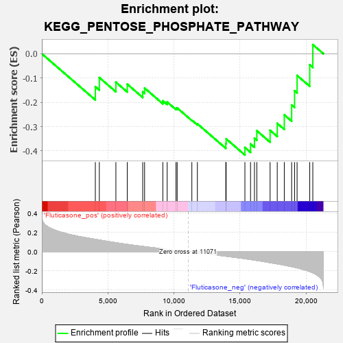
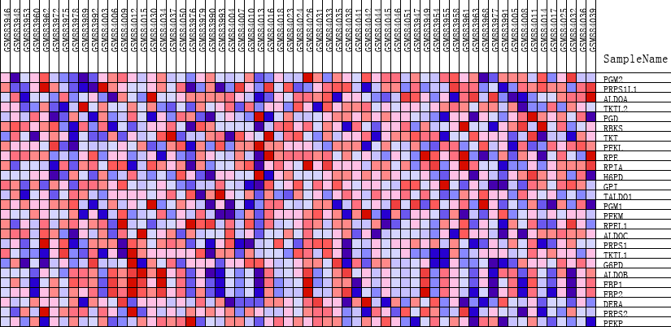
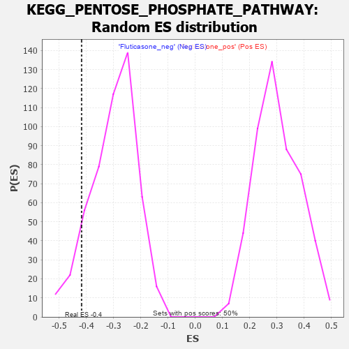

| | | Dataset | GSEA_expr_Flu.GSEA_timepoint.cls#Fluticasone |
| Phenotype | GSEA_timepoint.cls#Fluticasone |
| Upregulated in class | Fluticasone_neg |
| GeneSet | KEGG_PENTOSE_PHOSPHATE_PATHWAY |
| Enrichment Score (ES) | -0.41711003 |
| Normalized Enrichment Score (NES) | -1.3948985 |
| Nominal p-value | 0.097222224 |
| FDR q-value | 1.0 |
| FWER p-Value | 0.808 |
Table: GSEA Results Summary

Fig 1: Enrichment plot: KEGG_PENTOSE_PHOSPHATE_PATHWAY
Profile of the Running ES Score & Positions of GeneSet Members on the Rank Ordered List
| PROBE | DESCRIPTION
(from dataset) | GENE SYMBOL | GENE_TITLE | RANK IN GENE LIST | RANK METRIC SCORE | RUNNING ES | CORE ENRICHMENT | | 1 | PGM2 | NA | | | 4047 | 0.128 | -0.1355 | No |
| 2 | PRPS1L1 | NA | | | 4349 | 0.121 | -0.0979 | No |
| 3 | ALDOA | NA | | | 5602 | 0.093 | -0.1171 | No |
| 4 | TKTL2 | NA | | | 6464 | 0.076 | -0.1252 | No |
| 5 | PGD | NA | | | 7632 | 0.054 | -0.1569 | No |
| 6 | RBKS | NA | | | 7773 | 0.052 | -0.1412 | No |
| 7 | TKT | NA | | | 9156 | 0.029 | -0.1937 | No |
| 8 | PFKL | NA | | | 9483 | 0.024 | -0.1988 | No |
| 9 | RPE | NA | | | 10153 | 0.013 | -0.2244 | No |
| 10 | RPIA | NA | | | 10240 | 0.012 | -0.2233 | No |
| 11 | H6PD | NA | | | 11351 | -0.004 | -0.2736 | No |
| 12 | GPI | NA | | | 11768 | -0.011 | -0.2885 | No |
| 13 | TALDO1 | NA | | | 13919 | -0.047 | -0.3695 | No |
| 14 | PGM1 | NA | | | 13946 | -0.047 | -0.3505 | No |
| 15 | PFKM | NA | | | 15364 | -0.073 | -0.3860 | Yes |
| 16 | RPEL1 | NA | | | 15791 | -0.081 | -0.3713 | Yes |
| 17 | ALDOC | NA | | | 16088 | -0.088 | -0.3479 | Yes |
| 18 | PRPS1 | NA | | | 16266 | -0.092 | -0.3171 | Yes |
| 19 | TKTL1 | NA | | | 17271 | -0.115 | -0.3154 | Yes |
| 20 | G6PD | NA | | | 17811 | -0.127 | -0.2866 | Yes |
| 21 | ALDOB | NA | | | 18345 | -0.141 | -0.2516 | Yes |
| 22 | FBP1 | NA | | | 18901 | -0.156 | -0.2110 | Yes |
| 23 | FBP2 | NA | | | 19123 | -0.162 | -0.1521 | Yes |
| 24 | DERA | NA | | | 19313 | -0.168 | -0.0892 | Yes |
| 25 | PRPS2 | NA | | | 20271 | -0.208 | -0.0454 | Yes |
| 26 | PFKP | NA | | | 20503 | -0.220 | 0.0377 | Yes |
Table: GSEA details [plain text format]

Fig 2: KEGG_PENTOSE_PHOSPHATE_PATHWAY
Blue-Pink O' Gram in the Space of the Analyzed GeneSet

Fig 3: KEGG_PENTOSE_PHOSPHATE_PATHWAY: Random ES distribution
Gene set null distribution of ES for KEGG_PENTOSE_PHOSPHATE_PATHWAY